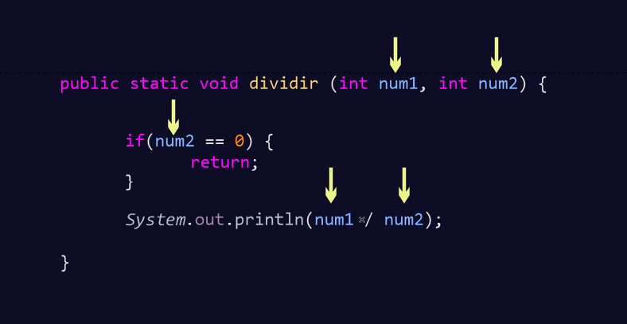
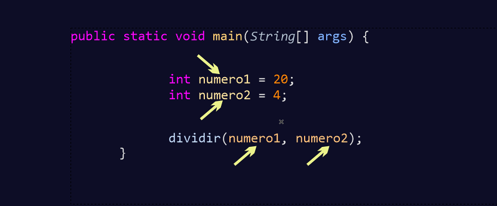

Si nos fijamos en todos los programas que hemos hecho hasta ahora, todos contenían el método main. Ya dijimos que era el primer método que arrancaba en nuestra aplicación de Java.
Creo que ha llegado el momento de explicarlo y también de explicar qué más métodos podremos crear para que nuestro código sea reutilizable y modular.
Tanto los modificadores de acceso como los modificadores de clase se verán en otros apartados posteriores. Ahora nos vamos a centrar en el resto de partes que contienen los métodos y dejaremos por defecto, hasta que no se explique bien, public y static.
Si nos fijamos, a continuación de public static, tenemos la palabra reservada void.
Void significa vacío. Cuando en un método tenemos esta palabra reservada, significa que cuando invoquemos al método desde otro lugar no se devolverá ningún valor.
Por ejemplo, voy a crear un método muy básico que no tiene mucha utilidad aunque nos va a orientar muy bien en lo que quiero explicar.
Este método parece que devuelve algo, pero no es así, lo que está haciendo es invocar en su interior el método println de la clase System y es por eso que acaba mostrando por la consola el número 5.
Otro ejemplo muy similar que podríamos ver sería el siguiente, y como se puede ver aquí ni siquiera imprime nada por la consola:
Si analizamos bien lo que está pasando en nuestro código, podemos ver que en el método main, llama al método sumar y una vez que realiza las operaciones que hay en el interior del método, pasa a la siguiente línea imprimiendo: Termina nuestro programa.
A este tipo de métodos se les denomina procedimientos, porque realizan unas determinadas instrucciones hasta que finalizan sin devolver nada.
Las funciones en cambio, sí que devuelven valores. Esa es la diferencia entre procedimiento y función. El procedimiento no devuelve nada, mientras que la función sí que lo hace.
Ya vimos con anterioridad los tipos de datos, y la función que tenían las variables con ellos de reservar un determinado espacio en memoria. En los métodos tienen otra función diferente. Ya hemos visto lo que hace void, simplemente no devuelve nada. ¿Pero qué es eso de devolver? Vamos a verlo.
Ahora tenemos otro método que sí que nos devuelve un tipo de dato int:
En este caso, el método main invoca al método sumar, éste como podemos ver en su cabecera, devuelve un tipo de dato entero, dentro de él se puede ver que hay declaradas e inicializadas dos variable de tipo entero y después aparece un return con la suma de ambas variables. Con el return lo que se hace es devolver el valor calculado.
Tras devolver la función el valor, sale de ésta y salta a la siguiente linea imprimiendo por consola: Termina nuestro programa.
Parece que te he tomado el pelo, pero en realidad no es así. Sí que se ha devuelto ese valor, lo que ocurre es que en el método main no hemos hecho nada con ese dato y lo hemos perdido.
Para no perder ese valor y poderlo utilizar, podríamos guardarlo dentro de una variable, o imprimirlo por consola entre más cosas que se podrían realizar.
Ahora, se ha almacenado el valor de sumar() en una variable y después se ha imprimido. En la siguiente línea, directamente lo hemos imprimido por consola.
Pues igual que hemos hecho con el tipo de dato int, podríamos hacer con el resto de tipos de datos, hasta incluso podríamos devolver objetos y otros métodos. Ya lo iremos viendo y practicando conforme vayamos desarrollando más nuestras habilidades.
Hay que tener en cuenta que cuando se llega a return, la función recoge el dato que le indicamos y sale de ésta. Así que todo el código que haya debajo de return, jamás se ejecutará.
En este ejemplo, podemos ver cómo directamente Eclipse no nos deja siquiera ejecutar nuestro programa y nos manda un error indicando que hay código no alcanzable.
Así que, la última sentencia que tendrá nuestra función será donde aparezca return.
Cabe destacar, y es curioso, que aunque void no devuelva nada, lo podremos usar para salir de la función.
Si nos fijamos en el método dividir, tiene dos variables en su interior que deberían de realizar una división. El problema que uno de ellos es 0 y sabemos que no se puede dividir por 0, por lo tanto, al evaluar el valor con la condicional y ver que es cero, lo que ocurre es que entra en el if, ejecuta el return vacío y sale de la función sin ejecutar las siguientes líneas. Recuerda que cuando llega al return se almacena el valor (si existe) y sale de la función.
Los parámetros nos ayudan a introducir datos externos dentro de nuestros métodos que se podrían necesitar. Pueden ser usados tanto en procedimientos como en funciones.
Vamos a ver ahora el método de la división utilizando parámetros.
Hemos introducido dos parámetros, en este caso los dos son de tipo entero, pero podría haber sido uno entero y el otro double, u otro tipo de dato distinto, hasta un objeto (ya se verá más adelante).
Cada parámetro tiene su propio nombre y cuando necesitemos utilizar el valor que contiene dentro de la función, escribiremos sun nombre como se muestra en el dibujo.
Ahora vamos a ver cómo lo llamaríamos desde el método main.
Aquí he puesto otros nombres a las variables para que se vea más claro que lo que realmente le importa a Java es el tipo de dato que tenían los parámetros. En este caso eran de tipo entero, así que se podrá pasar como parámetro cualquier variable que tenga un tipo de dato entero, aunque se llame Fulano.
Y para demostrar que realmente lo que le interesa es el valor con el tipo de dato concreto, en esta llamada no introduzco ninguna variable.
Aquí he pasado dos números de tipo entero (recuerda los literales) y como ambos parámetros necesitaban ese tipo de dato, lo acepta y realiza la operación.
Por último muestro cómo se vería el resultado con todo el código completo para ver toda la estructura completa.
Podríamos también pasar una función por parámetro:
Para empezar el método main se ha declarado el último para que se vea que no es necesario que esté al comienzo de nuestra clase. Lo que cuenta para que se ejecute, es justo encontrar el nombre de éste con sus modificadores declarados de la misma manera.
Ahora vamos a explicar la función validarCompra(), como se puede ver, se le pasan una serie de parámetros que validarán si tenemos suficiente dinero para comprar un determinado producto según los Kilos que vayamos a compar. Si la cantidad es menor que cero, no podremos comprarlos por lo tanto devolverá falso y saldrá de la función.
En el método hacerCompra, como parámetro tenemos un booleano que verificará si hayDinero suficiente. En caso de no haberlo devolverá un String donde nos dirá que no lo tenemos y en caso contrario, nos dará las gracias.
Ahora, en el método main se han declarado las tres variable para realizar el cálculo de nuestra compra.
después en una variable, guardaremos el String que nos devuelve la función hacer Compra, que tiene como parámetro la función que validaba nuestra compra devolviendo true o false. Ésta a su vez lleva como parámetros las tres variables que declaramos al principio.
Este ejemplo se puede ver muy estático, pero imagina ahora que en vez de ser una variable ya fijada, le damos la oportunidad al usuario a introducir él sus propios datos:
Aunque todavía no se haya visto, debo adelantar que, también es posible pasar como parámetro objetos.